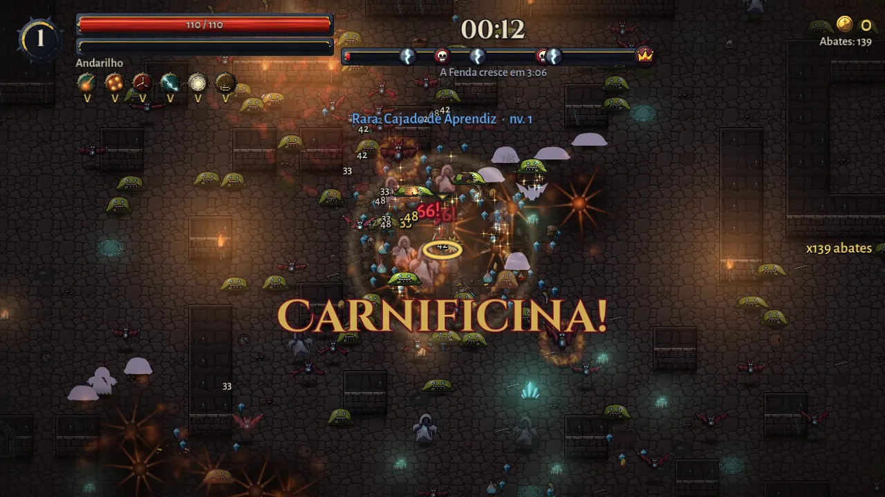
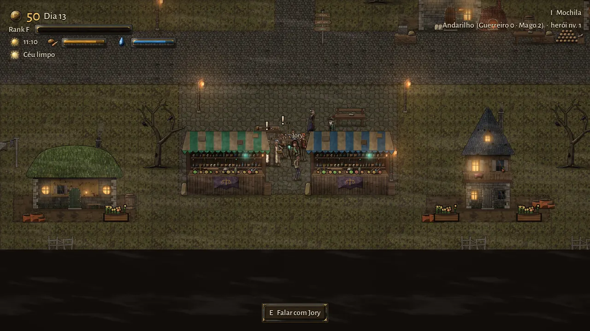
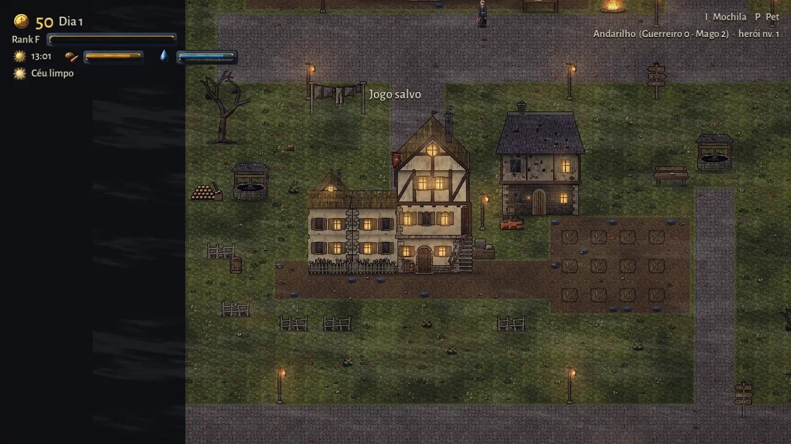
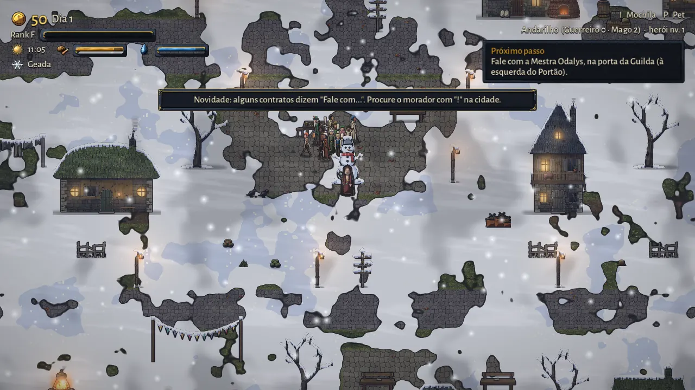
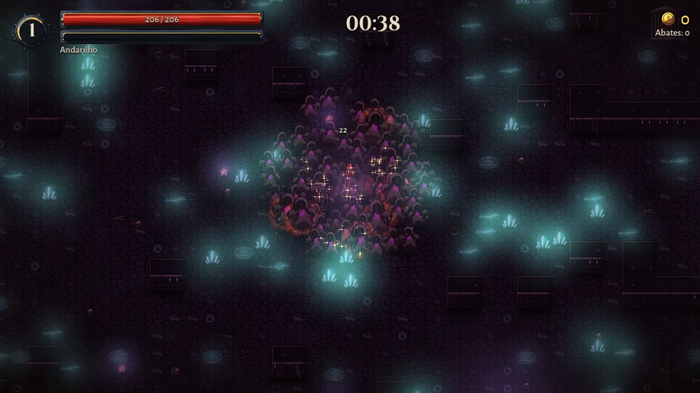
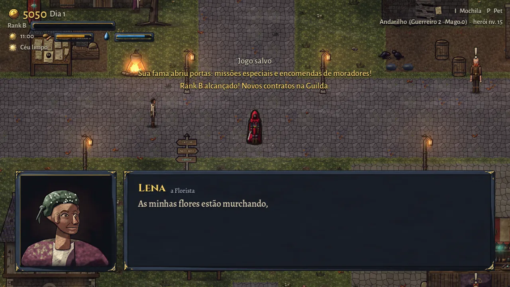

A Fenda sangra sobre Aethelgard e cospe masmorras vivas. Desça, enfrente as hordas e volte para Valenport para cuidar da sua casa. Plante, construa e sobreviva.
Windows 10 ou 11 (64 bits) · como instalar
Veja o jogo
Da Fenda até a sua casa






O que tem no jogo
Desça, volte, cresça
I
Masmorras vivas
Catorze masmorras, cada uma com criaturas, guardiões e chefe próprios. Escolha poderes a cada nível e monte o seu jeito de lutar.
II
Equipamento e classes
Peças comuns até lendárias, com poderes exclusivos. O que você veste define a sua classe.
III
Uma vida na cidade
Coma, beba, cozinhe, plante, compre imóveis, adote um pet e veja Valenport prosperar. Um guia mostra o próximo passo para quem está começando.
Como instalar
Três passos
- Baixe o instalador
Clique em "Baixar para Windows". O arquivo vai para a sua pasta Downloads.
- Abra o arquivo
Dê dois cliques nele e siga as telas. Ele cria um atalho na Área de Trabalho e no Menu Iniciar.
- Jogue
Abra o iamT Guild pelo atalho. O seu progresso fica salvo no computador.
A Guilda está contratando
Valenport precisa de quem ainda tem coragem.